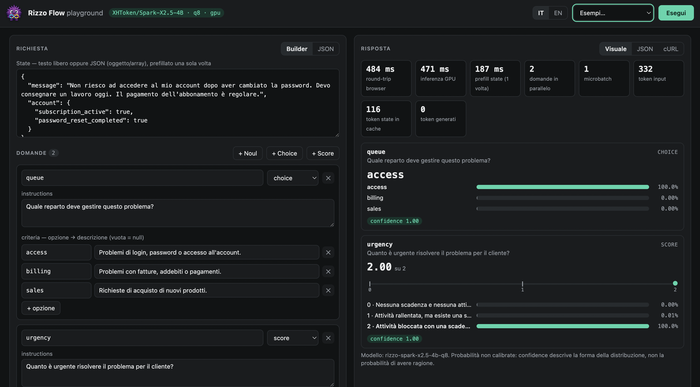

Unstructured state in, typed probabilistic decisions out: a yes/no, a choice, a score, a number. On your own machine, with open weights and a Jev-compatible API. State non strutturato in ingresso, decisioni tipizzate con probabilità in uscita: un sì/no, una scelta, un punteggio, un numero. Sulla tua macchina, con pesi open e un'API compatibile con Jev.
An LLM asked to classify something writes an answer, token by token, in a format you hope is valid JSON. But the decision is already inside the model after one forward pass: it is the probability it gives to each possible answer. Rizzo Flow reads exactly that, and nothing else. Un LLM a cui chiedi di classificare qualcosa scrive una risposta, token dopo token, in un formato che speri sia JSON valido. Ma la decisione è già dentro il modello dopo un solo forward pass: è la probabilità che assegna a ogni risposta possibile. Rizzo Flow legge esattamente quella, e nient'altro.
About Jev. Jev is TypeSafe's closed, hosted "System One" model. Rizzo Flow is an independent open-source project, not affiliated with TypeSafe: it reproduces the interface pattern with an off-the-shelf open model, in the spirit of SemIf. It does not reproduce Jev's architecture or its RLCD training, and its probabilities are uncalibrated unless you calibrate them on your data. A proposito di Jev. Jev è il modello "System One" di TypeSafe, chiuso e ospitato. Rizzo Flow è un progetto open source indipendente, non affiliato a TypeSafe: riproduce il pattern di interfaccia con un modello open già esistente, nello spirito di SemIf. Non riproduce l'architettura di Jev né il suo training RLCD, e le probabilità non sono calibrate finché non le calibri sui tuoi dati.
Each candidate is one uppercase letter, verified to be a single token in context. 26 letters, 26 answer slots.Ogni candidato è una lettera maiuscola, verificata come token singolo nel contesto. 26 lettere, 26 slot di risposta.
The last hidden state is multiplied by just the vocabulary rows of the allowed letters, also with quantized weights. Identical to the full projection.L'ultimo hidden state si moltiplica solo per le righe di vocabolario delle lettere ammesse, anche con pesi quantizzati. Identico alla proiezione completa.
Built-in abstention and out-of-range options. When they win, the value is null with an explicit status.Opzioni di astensione e fuori scala integrate. Quando vincono, il valore è null con uno status esplicito.
Responses carry logits, prompt hashes and weight hashes. Inputs over a limit are rejected, never truncated.Le risposte riportano logit, hash dei prompt e dei pesi. Gli input oltre i limiti sono rifiutati, mai troncati.
POST /v1/systemone mirrors the public TypeSafe API: state, model, questions in, answers and usage out. The response always reports the local model id: nothing ever presents itself as Jev.
POST /v1/systemone ricalca l'API pubblica di TypeSafe: entrano state, model, questions, escono answers e usage. La risposta riporta sempre l'ID del modello locale: niente si presenta mai come Jev.
curl http://127.0.0.1:8017/v1/systemone \
-H 'Content-Type: application/json' -d '{
"state": "Help! My payouts have been failing for 3 days.",
"model": "rizzo-latest",
"questions": {
"is_urgent": {
"type": "noul",
"instructions": "Does this convey urgency?" },
"department": {
"type": "choice",
"instructions": "Which team should handle this?",
"criteria": {
"billing": "Payments, invoicing, refunds",
"technical": "Bugs, outages, integrations",
"sales": "Pricing, upgrades, new accounts" } },
"frustration": {
"type": "score",
"instructions": "How frustrated is the customer?",
"criteria": ["Calm", "Frustrated", "Very angry"] }
}
}'A real response from Spark-X2.5-4B at 8 bit on an M4 Pro. Note how peaked the raw probabilities are: calibrate before trusting thresholds.Una risposta reale di Spark-X2.5-4B a 8 bit su M4 Pro. Nota quanto sono concentrate le probabilità grezze: calibra prima di fidarti delle soglie.
boolean · noulA yes/no question. Returns the probability of yes; natively also a value that can be null when evidence is missing.Una domanda sì/no. Restituisce la probabilità di sì; nativamente anche un valore che può essere null se manca l'evidenza.
choicePick one of up to 26 described options. Returns the winner and the full distribution.Sceglie una fra massimo 26 opzioni descritte. Restituisce la vincente e la distribuzione completa.
scoreRate the state on an ordered rubric. The score is probability-weighted, so it can land between levels.Valuta lo state su una rubrica ordinata. Il punteggio è pesato per probabilità, quindi può cadere fra due livelli.
numericEstimate a number from anchors you define, with a unit, a median, a spread, and below/above-range probabilities. Native API only.Stima un numero da ancore che definisci, con unità, mediana, dispersione e probabilità di fuori scala. Solo API nativa.
Asking many questions at once is the point: 8 yes/no questions on one document cost one prefill plus two micro-batches (932 ms on an M4 Pro at 8 bit), not eight full passes. Fare tante domande insieme è il punto: 8 domande sì/no su un documento costano un prefill più due microbatch (932 ms su M4 Pro a 8 bit), non otto passaggi completi.
Question builder, ready-made examples, raw JSON editor for both endpoints, probability bars, timings and the equivalent cURL. One self-contained page, in Italian or English, with no external calls. Builder di domande, esempi pronti, editor JSON per entrambi gli endpoint, barre di probabilità, tempi e cURL equivalente. Una pagina autonoma, in italiano o inglese, senza chiamate esterne.

Spark-X2.5 keeps full attention in only 9 of its 36 layers; the rest use a 512-token sliding window. The KV cache therefore costs about 36 KiB per token, which is what makes "prefill a big state once, ask many cheap questions" practical. You set the limit with --ctx: it is a guard, not a memory reservation.
Spark-X2.5 tiene l'attenzione piena solo in 9 layer su 36; gli altri usano una finestra scorrevole di 512 token. La KV cache costa quindi circa 36 KiB per token, ed è ciò che rende praticabile "prefill di uno state grande una volta, tante domande economiche". Il limite si imposta con --ctx: è una guardia, non una prenotazione di memoria.
| State tokensToken di state | KV cache | with --batch-size 4con --batch-size 4 |
|---|---|---|
8,192 (default --ctx) | 0.3 GiB | 1.1 GiB |
| 60,000 | 2.1 GiB | 8.2 GiB |
| 131,072 | 4.5 GiB | 18 GiB |
| 1,048,576 | 36 GiB | 144 GiB |
We ran SemIf's own fixtures through Rizzo Flow and scored them with SemIf's own metric code. Apple M4 Pro, 24 GiB, 8 bit, prompt v2. Every report is in the repository with logits and hashes. Abbiamo eseguito le fixture di SemIf con Rizzo Flow e le abbiamo valutate con il codice di metrica di SemIf. Apple M4 Pro, 24 GiB, 8 bit, prompt v2. Ogni report è nel repository con logit e hash.
| MeasureMisura | Rizzo Flow · Spark-X2.5-4B Q8 | SemIf · Qwen3.5-4B Q8 (published)(pubblicato) |
|---|---|---|
authored144 · balanced accuracybalanced accuracy | 0.758 | 0.819 |
perturbations108 | 0.706 | 0.766 |
| Latency per decision, short state (p50 / p95)Latenza per decisione, state corto (p50 / p95) | 254 / 259 ms | — |
| 37 states of ~2k tokens × 21 criteria, shared cache37 state da ~2k token × 21 criteri, cache condivisa | 3.92 dec/s | — |
| Shared cache vs fresh scoringCache condivisa vs calcolo da zero | 12.6× · 0 flips | — |
You need a Mac with Apple Silicon, Python 3.11+ and uv.Servono un Mac con Apple Silicon, Python 3.11+ e uv.
# 1 · install
git clone https://github.com/Rizzo-AI-Academy/rizzo-flow && cd rizzo-flow
uv sync --extra mlx --extra test --locked
# 2 · download a model (pick one)
.venv/bin/rizzo download # Spark-X2.5-4B · ~8 GB
.venv/bin/rizzo download --size 1.7b # Spark-X2.5-1.7B · ~3.4 GB · wired in, not benchmarked yet
# 3 · start the backend (8 bit, ~5 GiB)
.venv/bin/rizzo serve --bits 8 --ctx 8192
# 4 · open the playground
open http://127.0.0.1:8017/playground{kind=link}